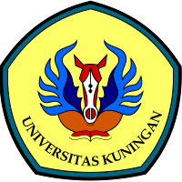

UNIVERSITAS KUNINGAN
Universitas Kuningan (UNIKU) adalah perguruan tinggi swasta di Kabupaten Kuningan, Jawa Barat. Berikut adalah beberapa informasi mengenai UNIKU:
Artikel 1
Artikel 2
Artikel 3
Artikel 4
Artikel 5
Artikel 1
UNIKU didirikan pada 6 Juni 2003 sebagai hasil penggabungan empat sekolah tinggi di bawah Yayasan Pendidikan Sang Adipati Kuningan.
Artikel 2
Tujuan UNIKU adalah untuk menghasilkan lulusan yang memiliki jiwa kewirausahaan, menguasai cabang ilmu tertentu, dan dapat meningkatkan daya saing bangsa.
Artikel 3
UNIKU memiliki beberapa jenis beasiswa, di antaranya Beasiswa Peningkatan Prestasi Akademik (PPA), Beasiswa Bantuan Belajar Mahasiswa (BBM), dan Beasiswa PT Bank BNI 46 (Persero).
Artikel 4
Pada tahun 2022, UNIKU masuk dalam 100 besar perguruan tinggi swasta (PTS) terbaik di Indonesia versi UniRank.
Artikel 5
UNIKU juga masuk dalam 100 besar perguruan tinggi nasional yang terdaftar di UI Green Metric World University Rangkings pada tahun 2022.